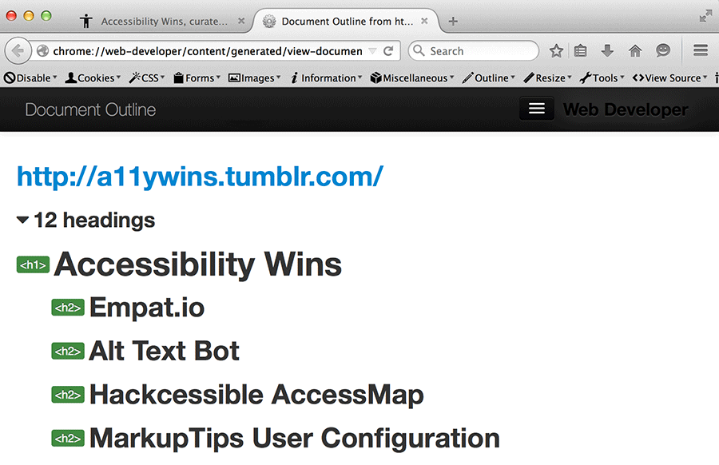
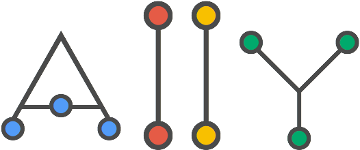
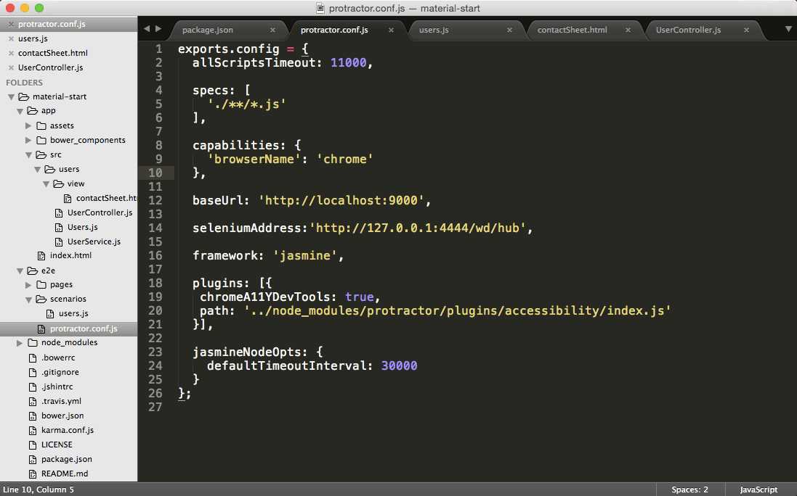

30 Minutes or Less:
The Magic of Automated Accessibility Testing
Marcy Sutton, Seattle, WA
Developer @Substantial, Angular Core Team Member
Accessibility is the answer to a more inclusive Web.
(Pizza is also always the answer.)
Accessibility Basics
- Alternative text
- Document structure & hierarchy
- HTML semantics
- Keyboard interactivity
- Color contrast
- Focus management
How to Accessibility

Let tooling to do some heavy lifting for you.
Let's talk about:
- Manual Testing
- Sorta-Automated Testing
- Definitely Automated Testing
But automating’s no substitute for...
real user feedback
* Inclusive of people with disabilities
Technologies 1/2
Windows
- VirtualBox and Modern.IE
- IE and JAWS
- Firefox and NVDA
Technologies 2/2
- Safari and Voiceover
OSX and iOS - Firefox Desktop
Firefox with Android TalkBack - Chrome Desktop
First thing I do:
Tab through a page with
the keyboard
Demo: GOV.UK
Next thing:
Use a screen reader
Sorta-Automated Testing
Headings & Semantic Structure


Overall Page A11Y
Let's do an audit
Demo: CNN.com
Chrome Accessibility Developer Tools
Open Source Audit Library

What do you do with those?
Definitely Automated Testing

by Addy Osmani
var a11y = require('a11y');
a11y('cnn.com', function (err, reports) {
var report = reports.report;
console.log(report);
});
A11y Command-Line Demo
Ways to Integrate
- Run on save
- Run on commit
- Run on deploy
+ Accessibility Plugin
Protractor
Test for:
- Focus management
- Color contrast
- Missing labels
- Incorrect ARIA attributes
Angular Material Start

Write some tests, deliver some audits
describe('bottom sheet view', function() {
beforeEach(function() {
// click on share button
element(by.css('button.share')).click();
});
it('should focus on the first item', function() {
// verify focus was sent into bottom sheet
element.all(by.css('[ng-click="vm.performAction(item)"]'))
.then(function(items) {
expect(items[0].getAttribute('id'))
.toEqual(browser.driver.switchTo().activeElement().getAttribute('id'));
});
Bonus: Chrome A11y Developer Tools
Let's fix those failures
Open in Sublime
Run Protractor Tests
End-to-End
vs.
Unit Testing
Parts of the development workflow
Unit Testing for Accessibility
Opportunities:
- Watched ARIA properties
- Keyboard operability
- Text alternatives
- Semantics
Example: ngAria
ngAria Unit Tests
ddescribe('aria-checked', function() {
beforeEach(injectScopeAndCompiler);
it('should not attach itself to input type="checkbox"', function() {
compileElement('');
expect(element.attr('aria-checked')).toBeUndefined();
});
it('should attach itself to custom checkbox', function() {
compileElement('Automated Accessibility Testing,
delivered
- Manual:
Keyboard, screen reader - Sorta automated:
Firefox Web Developer Toolbar
Chrome Accessibility Developer Tools - Automated:
End-to-end, Unit testing
Computers are great but
You also need people
To test your sites